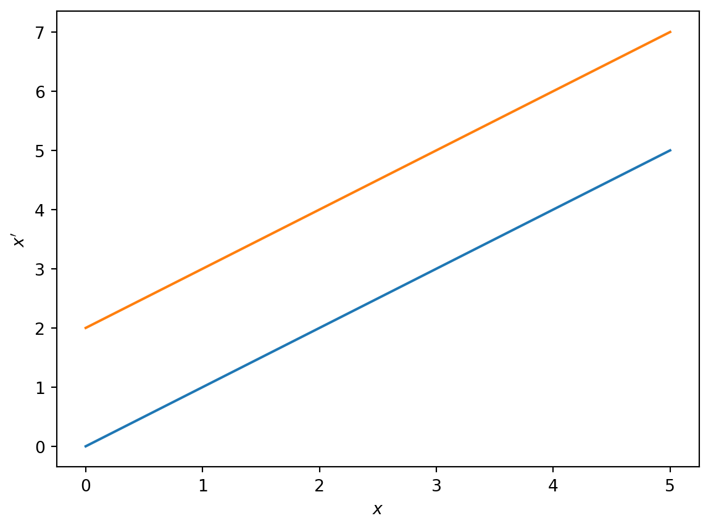
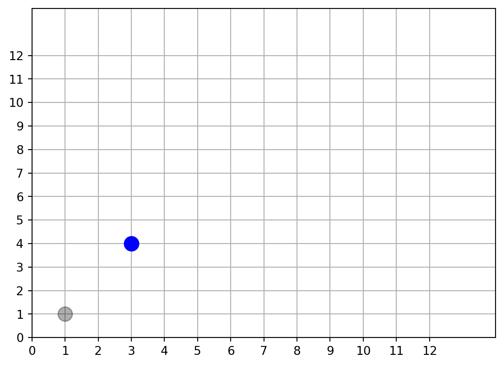
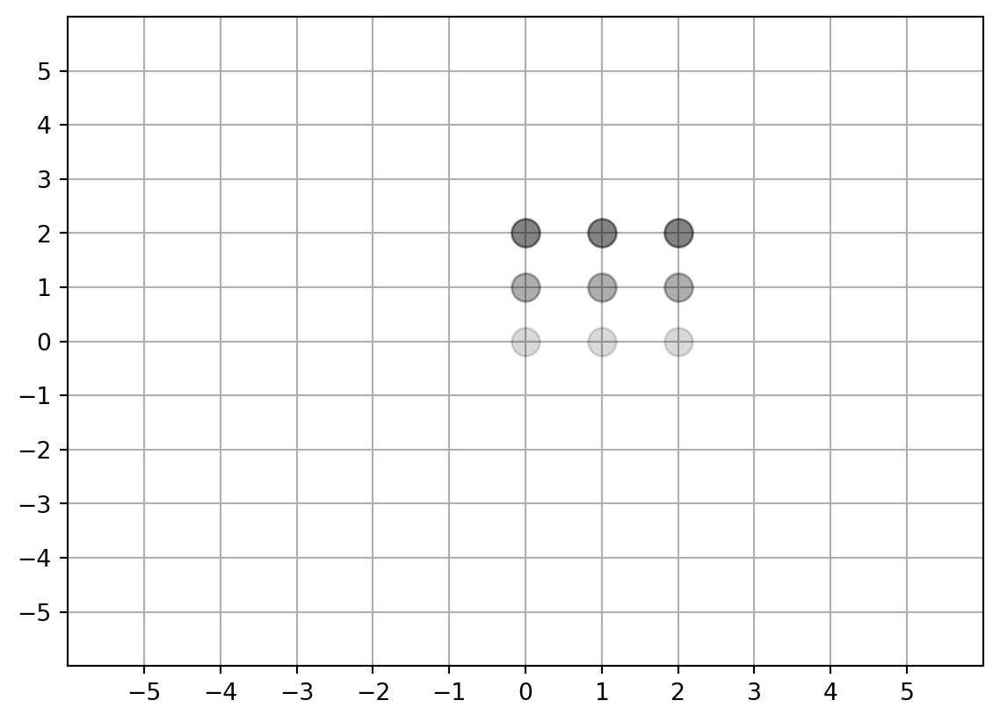
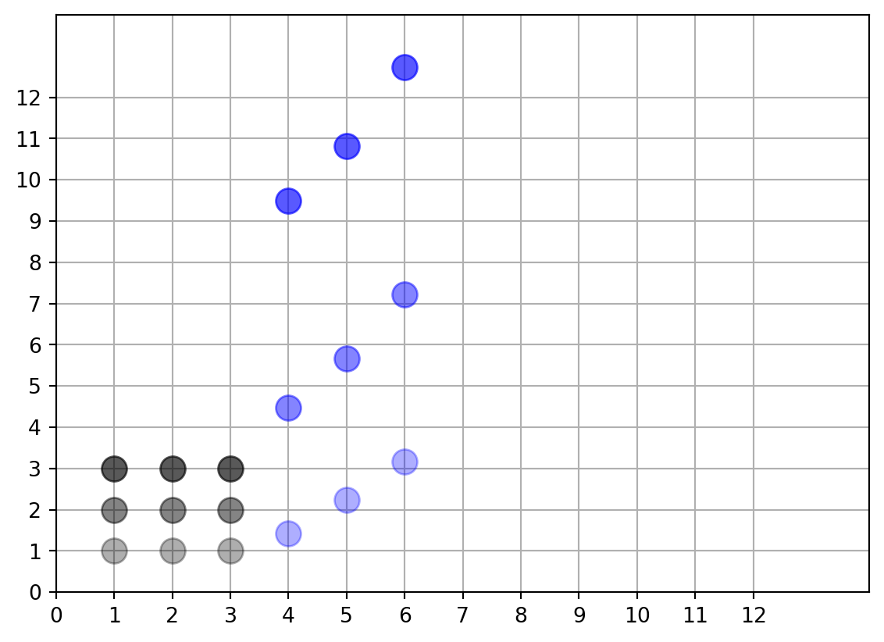

The exercises below allow us to explore and use a number of important areas of mathematics:
algebra
geometry
programming (I have purposefully left Python codes in the document)
Key skills are use of:
examples to develop intuition
proof to make general statements
computer programming to help solve and visualise
1.1 Functions of one variable
You might have come across functions of one variable. For example, suppose that \[
f(x)=x+2, \ \ \ x \in \Re.
\] This states that the function \(f\) maps a point \(x\) to the point \(x+2\).
In this session we will represent transformations using the notation \[
x'=x+2,
\] i.e. an old point, \(x\), gets mapped to a new point, \(x'\).
In the above example, for a given input value of \(x\), we add \(2\) to get the output, \(x'\) (see graph of \(f(x)\) in Figure 1).
Code
import numpy as npimport matplotlib.pyplot as pltx=np.linspace(0,5,20) # define discrete set of values ranging from 0 to 5x_p=x+2# define the new value of x# Plot old v newfig,ax=plt.subplots()ax.plot(x,x)ax.plot(x,x_p)ax.set_xlabel('$x$')ax.set_ylabel('$x\'$')plt.show()

Figure 1
1.2 Mapping coordinates in the plane
Now consider a point (\(x,y\)) that sits in the 2D Cartesian plane. We want to consider transformations that map the coordinates of the point \((x,y)\) to some other point in the plane (\(x',y'\)).
1.2.1 Translations
Consider the map: \[
\begin{aligned}
x' &= x+2 \\
y' &= y+3.
\end{aligned}
\] This transformation states that we add 2 to each \(x\) value and 3 to each \(y\) value.
Calculate the transformation of the point (1,1). Confirm that this is consistent with Figure 2.
Compute where the point (2,2) gets mapped to and sketch this on Figure 2.
Now try (3,3). Can you spot a pattern in the mapped points? Based on your observation, are you willing to formulate a general statement about translations?
Code
# define a set of old pointold_coordinates=[[1,1]]old_coordinates=np.array(old_coordinates)new_coordinates=old_coordinates.copy()# make figure and plot old coordinatesfig,ax=plt.subplots()for i inrange(1): ax.plot(old_coordinates[i,0],old_coordinates[i,1],'k.',alpha=0.15+old_coordinates[i,1]/6.0,markersize=24 )ax.set_xlim([0,14])ax.set_ylim([0,14])ax.grid()ax.set_xticks(np.linspace(0,12,13))ax.set_yticks(np.linspace(0,12,13))# Compute transformed pointsfor i inrange(old_coordinates.shape[0]): homog_vec=np.array(old_coordinates[i,:]).copy() new_coordinates[i,:]=homog_vec #+np.array([2,3]) new_coordinates[i,1]=new_coordinates[i,1]+3 new_coordinates[i,0]=new_coordinates[i,0]+2# PLot transformed pointsfor i inrange(1): ax.plot(new_coordinates[i,0],new_coordinates[i,1],'b.',markersize=24 )

Figure 2
Translations map straight lines to straight lines of equal slope
Consider an infinite set of points that sit on a line \[
y=mx+c
\] where \(m\) and \(c\) are real constants. We want to show that, in general, translations map straight lines onto straight lines.
To do this, let’s substitute in the parametric form of the straight line into the definition of the transformation, i.e.
\[
y'=y+3=mx+c+3.
\]
We also have that \[
x'=x+2 \implies x=x'-2.
\]
Hence \[
y'=mx+c+3 =m(x'-2)+c+3 = mx'+(c+3-2).
\]
Hence the translation maps a straight line with slope \(m\) onto another straight line that also has slope \(m\) but a modified intercept.
Note that we have moved from an example to a general statement about all straight lines in \(\Re^2\).
Could you show that this is true for a general translation \[
\begin{aligned}
x'&= x+a \\
y'&= y+b
\end{aligned}
\] where \(a\) and \(b\) are real constants.
Note
It is common in mathematics to experiment with examples and then to prove results for more general cases.
1.2.2 Scalings
Let’s consider a different type of transformation. The idea now is to take each of the points in the above example and multiply them by a scalar, \(d\).
We can represent this type of transformation as \[
\begin{aligned}
x'&=dx, \\
y'&=dy
\end{aligned}
\]
Let’s apply the same steps as in the translation case to this transformation:
Sketch where individual points get mapped to for a scaling where \(d=3\) (you could do this on Figure 2 again).
Use the sketch to show that a line of points maps on to another line of points under scaling.
In general, do scaling transformation preserve the slope?
1.2.3 Rotations
Now let’s consider an anti-clockwise rotation about the origin.
This can be represented by
\[
\begin{aligned}
x'&=\cos \theta x-\sin\theta y \\
y'&=\sin\theta x+\cos\theta y
\end{aligned}
\]
Consider a rotation given by \(\theta=\pi/4\) (i.e. 45 degrees). Substitute for \(\theta\) in the transformation and calculate and sketch where a point (1,1) transforms to. Note \(\cos{\pi/4}=\sin{\pi/4}=1/\sqrt{2}\).
Where do the points (2,2) and (3,3) map to under this rotation? Can you sketch these in the plane? Do rotations map straight lines onto straight lines.
Now consider a rotation of \(\pi/2\) (i.e. 90 degrees).
Can you show that for a general rotation \(\theta\), a straight line of points maps onto a different straight line of points?
1.2.4 General linear transformations in the plane
With a little more work it can be shown that a whole family of transformations (rotations, translations, shear, scaling) can be represented by a single matrix multiplication. This technique is a powerful tool used in computer graphics.
Follow the link in this QR code
Go to the Affine transformations in the plane app.
Explore combining the different linear transformations described above. Is the movement of the square under different transformations consistent with your observations above?
1.3 Transforming images
A 2D grayscale image is represented by matrix of numbers. The numerical values at each voxel represents the intensity.
So, for example, a (small) image with a central spot could be represented by a matrix:
Let’s consider a 3x3 grid with coordinates on an integer lattice (see below). The shading represents the intensity values in an image (i.e. there is vertical gradient in the image).
Code
old_coordinates=[[0,0],[0,1],[0,2],[1,0],[1,1], [1,2],[2,0],[2,1],[2,2]]old_coordinates=np.array(old_coordinates)new_coordinates=old_coordinates.copy()fig,ax=plt.subplots()for i inrange(9): ax.plot(old_coordinates[i,0],old_coordinates[i,1],'k.',alpha=0.15+old_coordinates[i,1]/6.0,markersize=24 )ax.set_xlim([-6,6])ax.set_ylim([-6,6])ax.grid()ax.set_xticks(np.linspace(-5,5,11))ax.set_yticks(np.linspace(-5,5,11))for i inrange(old_coordinates.shape[0]): homog_vec=np.array(old_coordinates[i,:]).copy() new_coordinates[i,:]=homog_vec+np.array([2,3])

Let’s apply a translation given by \[
\begin{aligned}
x'&=x+2 \\
y'&=y+3
\end{aligned}
\] to the image. To do this, transform each coordinate and ‘carry’ the shading. What properties does the transformed image have?
Now rotate the image anticlockwise about the origin by \(\pi/4\) radians (i.e. 45 degrees). Describe what has happened to the image’s orientation?
Note
We have learned that a simple image can be transformed using linear transformations. Each voxel of the image ‘carries’ the intensity value to a new location in the transformed image.
1.4 Nonlinear transformations
All the transformations considered above have been linear (\(x'\) and \(y'\) are some linear functions of \(x\) and \(y\)). It can be shown that this linearity results in certain properties always holding in the transformed image (e.g. straight lines map onto straight lines).
We can also consider nonlinear image mappings. Suppose that \[
\begin{aligned}
x' &=x+3 \\
y'&=y \sqrt{x^2+y^2}.
\end{aligned}
\] Here the mapping of the \(y\) coordinate depends on how close the original point is to the origin.
Code
old_coordinates=[[1,1],[1,2],[1,3],[2,1],[2,2], [2,3],[3,1],[3,2],[3,3]]old_coordinates=np.array(old_coordinates).astype(float)new_coordinates=old_coordinates.copy()fig,ax=plt.subplots()for i inrange(9): ax.plot(old_coordinates[i,0],old_coordinates[i,1],'k.',alpha=0.15+old_coordinates[i,1]/6.0,markersize=24 )ax.set_xlim([0,14])ax.set_ylim([0,14])ax.grid()ax.set_xticks(np.linspace(0,12,13))ax.set_yticks(np.linspace(0,12,13))for i inrange(old_coordinates.shape[0]): homog_vec=np.array(old_coordinates[i,:]).copy() new_coordinates[i,:]=homog_vec #+np.array([2,3]) new_coordinates[i,1]=new_coordinates[i,1]*np.sqrt(old_coordinates[i,1]**2+old_coordinates[i,0]**2) new_coordinates[i,0]=new_coordinates[i,0]+3for i inrange(9): ax.plot(new_coordinates[i,0],new_coordinates[i,1],'b.',alpha=0.15+old_coordinates[i,1]/6.0,markersize=24 )

The original grid (image) now gets distorted under the transformation. With more complicated nonlinear functions, we can begin to generate more complex distortions.
Use the QR code above to find another interactive demo called D’Arcy Thompson and 2D mappings